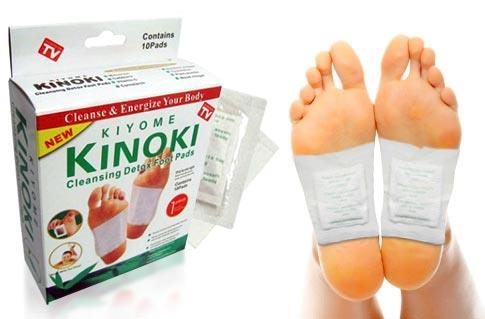
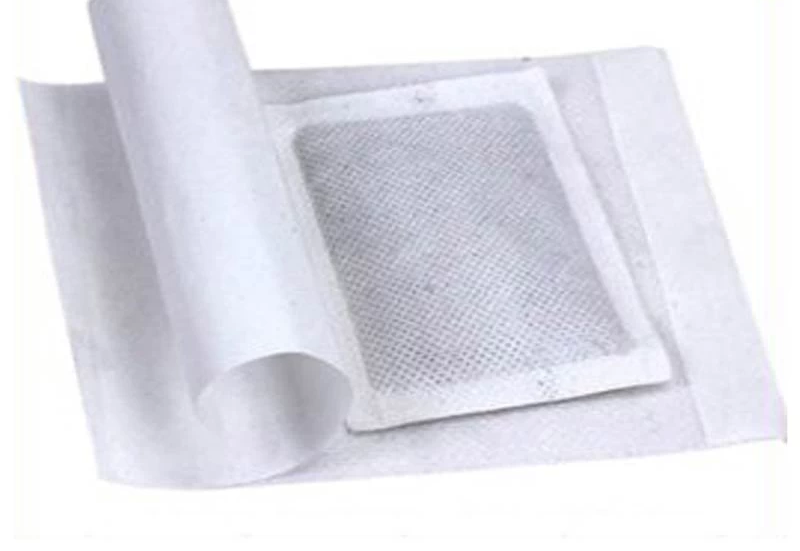
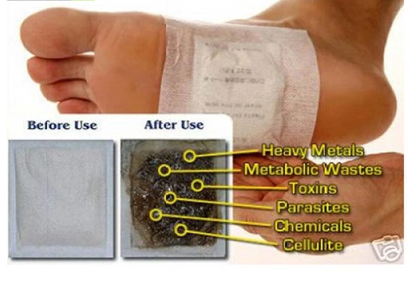

Почистете и енергизирайте тялото си




Продукт
Detox Foot Pads
Детаили за Продукта
ОПИСАНИЕ
Какви са съставките на детоксикационните пластири? Съставките на пластирите са 100% натурални субстанции, използвани в хилядолетния опит на азиатската медицина - бамбукова киселина, която има свойството да прониква и да изхвърля токсините, портокалово масло, стрити листа от японска вишна, хитозан, евкалипт, естествен източник на отрицателни йони – минералът турмалин, минерална и растителна пудра.